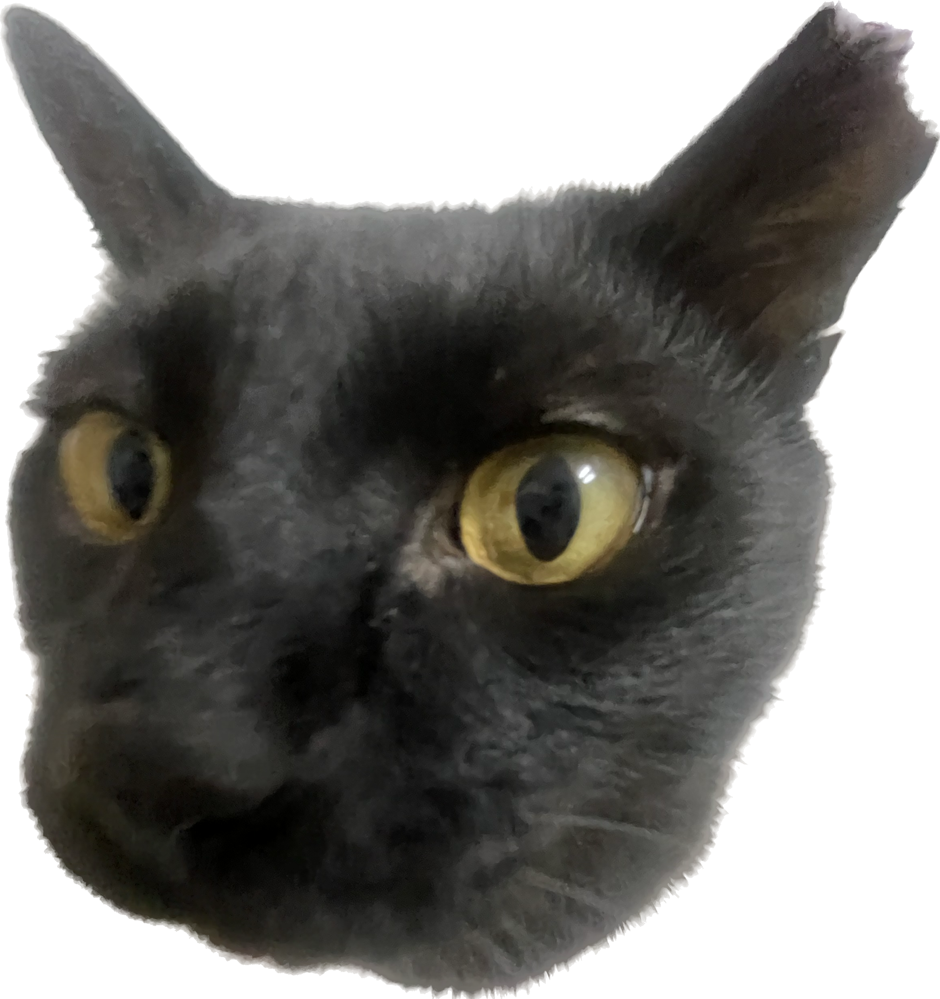
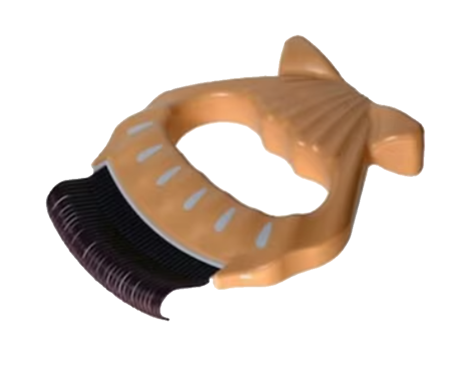
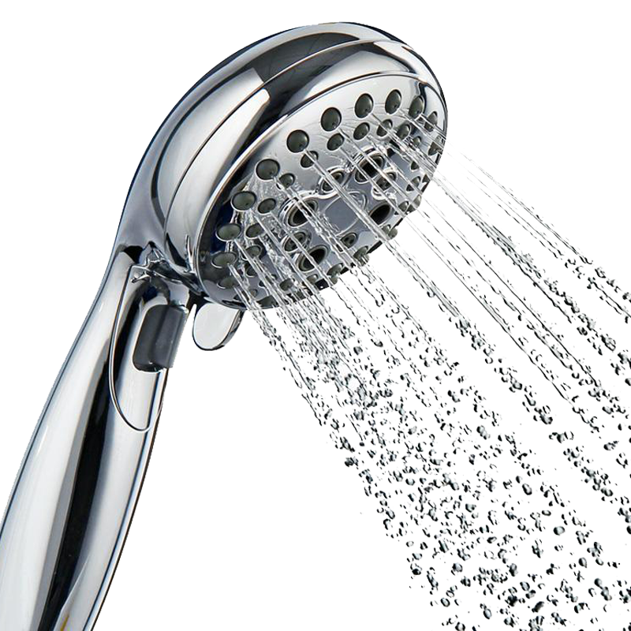
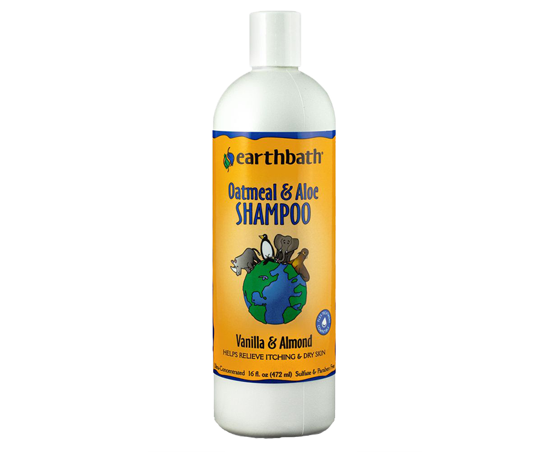
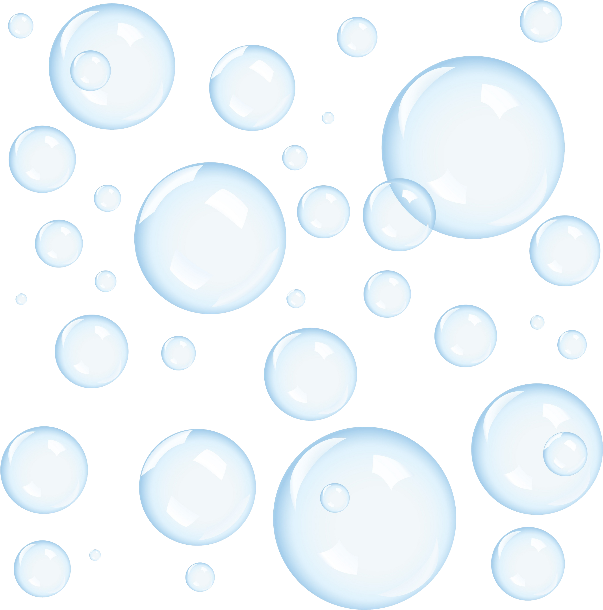
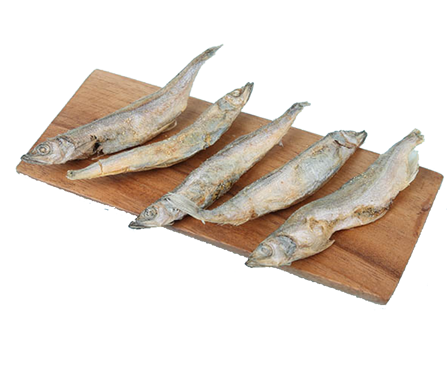
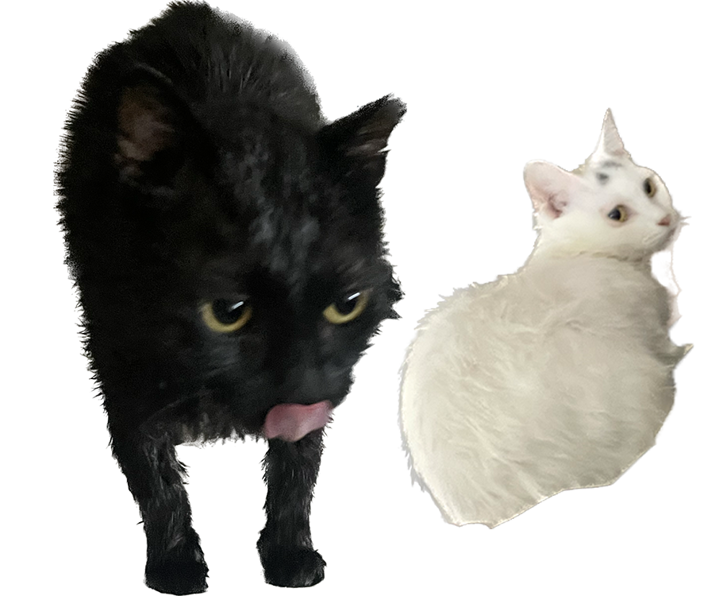

Cat
Food
Grooming
Toy
Gallery
글씨를 Hover 해보세요
카미는 검은 고양이,

이로는 흰 고양이로
집이 검은 털과
흰 털으로 뒤덮일 수 있어
매일 빗질은 필수이다.

두 고양이 모두 샤워도 얌전하게 하는

수속성 고양이이다.
샴푸를 재빠르게 하고

물로 깨끗이 씻어주는 샤워는

한두 달에 한 번정도 한다.
샤워를 마치면 빙어를 특식으로 급여한다.

귀여운 카미 이로 ^3^
